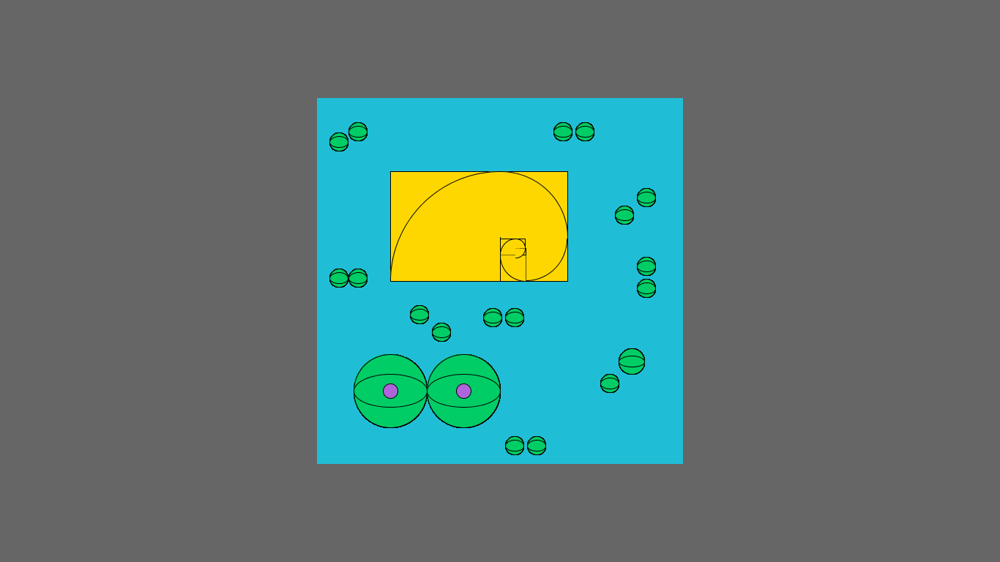

Title: Spiral
Dimensions: 500px X 500px
Medium: Processing 3
Description: Over the centuries, a great deal of lore has built up around phi. The idea represents perfect beauty and is uniquely found throughout nature. But much of that has no basis in reality. With perfection comes imperfects, numerous amount of asymmetrical lines and shapes that lead us to conclude the results as ugly. But ugliness also bring beauty of being unique!